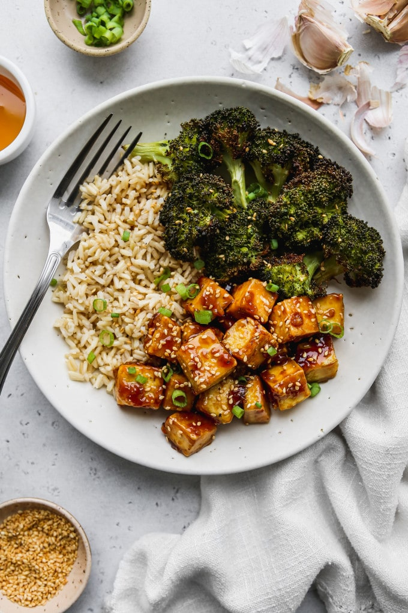

Honey Garlic Tofu

Description
This honey garlic tofu recipe is so simple and easy to make! Crispy baked tofu is tossed in a tasty sauce made from honey, garlic, soy, and sesame. Serve with whole grains (like brown rice) and veggies (like broccoli) for a complete meal.
Ingredients
Tofu
- 1 block tofu (firm or extra firm)
- 1 Tbsp avocado oil (or other neutral oil)
- Salt + Pepper
- 1 tbsp cornstarch
Honey Garlic Sauce
- 3 Tbsp toasted sesame oil
- 3-4 large cloves garlic, minced
- 3 Tbsp honey
- 1 Tbsp soy sauce (or tamari)
- 1 tsp rice vinegar
- 1 tsp cornstarch (mix with 1 tsp water to form slurry)
Optional Garnish
- Sesame seeds
- Green onion
- Salta + Pepper, to taste
Instructions
- Preheat oven to 400F. Line a baking sheet with parchment paper.
- Cut block of tofu into 1/2-inch to 1-inch cubes (see note). Take a paper towel and press the cubes gently to remove as much water as you can.
- Transfer the tofu to a bowl and toss in avocado oil, salt, and pepper. Add 1 tablespoon of cornstarch to the tofu and toss it again.
- Spread the tofu out onto a baking sheet and transfer to the oven for 20 minutes, flipping halfway through with a set of tongs.
- While the tofu is in the oven, prepare the honey garlic sauce on the stove. Start by heating up sesame oil in a small saucepan over medium. Add minced garlic and sauté for a couple minutes.
- Then, add in honey, soy sauce, rice vinegar, and cornstarch slurry. Bring ingredients to a boil and stir continuously for about 30-60 seconds as the sauce thickens. Remove from heat.
- Remove the tofu from the oven and toss in the honey garlic sauce. Serve with sides (see notes for ideas) and add optional garnish as desired. Enjoy immediately!